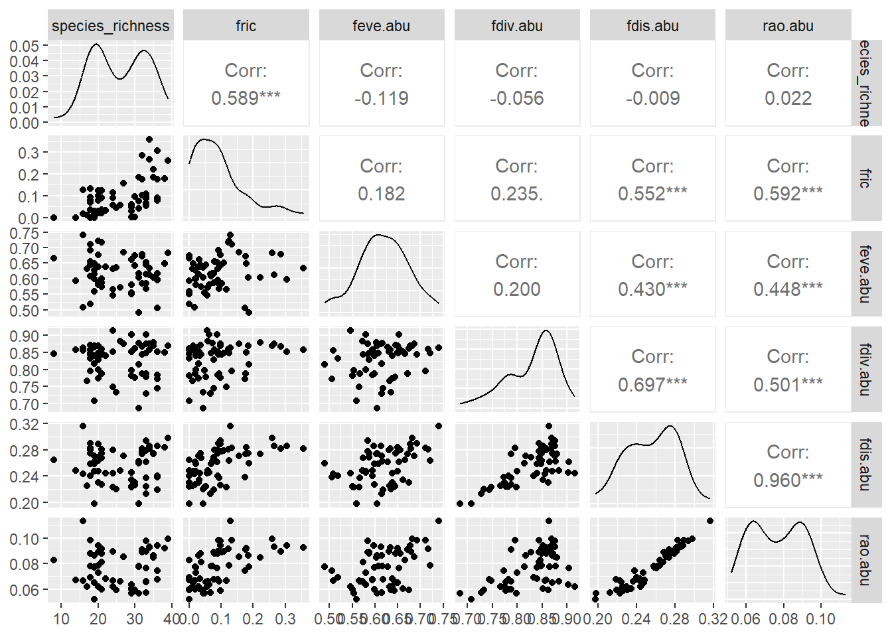
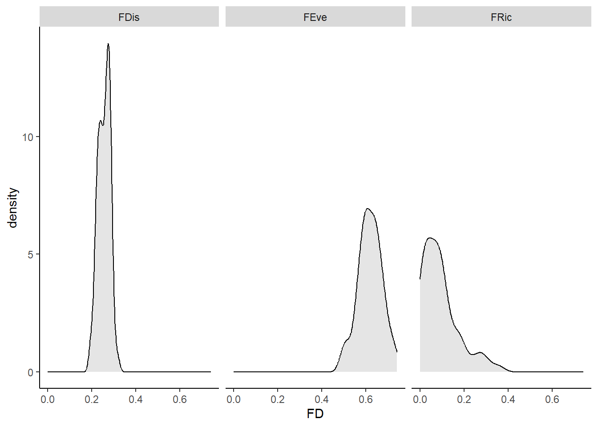

library(here)
library(tidyverse)
library(FD)
library(funspace)
rm(list = ls())Analysis of Ecological Data
Functional Diversity (FD) within communities
Technichal University of Munich, TUM School of Life Sciences, Chair of Restoration Ecology, Emil-Ramann-Straße 6, 85354 Freising, Germany
 https://orcid.org/0000-0001-5372-4174
https://orcid.org/0000-0001-5372-4174


This tutorial uses Bello et al. (2021)
1 Preparation
In this exercise we will learn how to compute different indices of Functional diversity (FD). This exercise follows the second part of Chapter 5 of the reference textbook, so all theoretical and mathematical issues beyond the indices described in this exercise can be found there. We will work with invented data and also field data from an climatic gradient in NE Spain. In Chapter 3, and the relative exercise, we already explained how to compute trait dissimilarity between species pairs, and thus in this exercise we assume that users have already an idea how to compute and interpret such trait dissimilarity. This file will first cover the use of the dbFD function, with invented data and then with the NE Spain data. Finally, we will learn how to compute alpha, beta and gamma functional diversity with the Rao index.
1.1 Load libraries and functions
The FD package is of Laliberté & Legendre (2010)
We will also need one ad-hoc function ‘Rao’
source(here::here("data", "raw", "bello_etal-2021", "chapter5", "Rao.r"))1.2 Load data
species_spain <- read_delim(
here::here(
"data", "raw", "bello_etal-2021", "chapter5", "speciesXplotsNE.txt"
),
col_names = TRUE, delim = "\t", col_types = cols(.default = "?")
) %>%
column_to_rownames("species")
traits_spain <- read_delim(
here::here(
"data", "raw", "bello_etal-2021", "chapter5", "speciesXtraitsNE.txt"
),
col_names = TRUE, delim = "\t", col_types = cols(.default = "?")
) %>%
column_to_rownames("species")
sites_spain <- read_csv(
here::here("data", "processed", "data_processed_sites_spain_4.4.csv"),
col_names = TRUE, col_types = cols(.default = "?")
)
species_ammer <- read_csv(
here::here("data", "processed", "data_processed_species_ammer_4.1.csv"),
col_names = TRUE, col_types = cols(.default = "?")
)
traits_ammer <- read_csv(
here::here("data", "processed", "data_processed_traits_ammer_4.1.csv"),
col_names = TRUE, col_types = cols(.default = "?")
)
sites_ammer <- read_csv(
here::here("data", "processed", "data_processed_sites_ammer_4.4.csv"),
col_names = TRUE, col_types = cols(.default = "?")
)2 Calculation of FD
2.1 Calculation with the dbFD function
2.1.1 Introduction
As well summarized in the help function of ?dbFD, dbFD implements a flexible distance-based framework to compute multidimensional functional diversity (FD) indices. dbFD returns the three FD indices of Villéger et al. (2008): functional richness (FRic), functional evenness (FEve), and functional divergence (FDiv), as well as functional dispersion (FDis; Laliberté and Legendre 2010), Rao’s quadratic entropy (Q) (Botta-Dukát 2005), a functional group richness (FGR) (number of functional groups, see Chapter 3 and Reference material Ch3 and Petchey and Gaston, 2006), and the community-level weighted means of trait values (CWM; e.g. Lavorel et al. 2008). Some of these FD indices consider species abundances (see Fig. 5.4 in the reference book).
As we just saw, the function dbFD is very practical because it computes a lot of indices of FD at once. Most of these indices are introduced and discussed in the reference textbook, in Chapter 5. We will thus learn how to apply the function dbFD, using first some of the examples available in the help of the function, i.e. from ?dbFD. As in the exercises with CWM, the examples for the function consider invented data, the ‘dummy’ data, containing both a ‘species x community’ matrix and a ‘species x trait’ matrix.
dummy <- dummy
dummy$abun # Species x community matrix sp1 sp2 sp3 sp4 sp5 sp6 sp7 sp8
com1 1 1 0 0 4 2 0 0
com2 0 0 0 2 1 0 0 5
com3 2 0 0 0 0 1 0 3
com4 1 0 7 0 0 0 0 0
com5 0 0 2 3 3 0 0 0
com6 0 3 0 0 5 6 1 6
com7 3 5 0 3 0 0 0 0
com8 0 0 0 0 6 2 1 2
com9 4 1 1 3 0 0 2 0
com10 0 4 1 0 0 0 6 1dummy$trait # Species x trait matrix num1 num2 fac1 fac2 ord1 ord2 bin1 bin2
sp1 9.0 4.5 A X 3 2 0 1
sp2 8.1 6.0 A Z <NA> 1 0 1
sp3 NA 2.3 C Y 5 3 1 1
sp4 3.2 5.4 B Z 1 7 0 0
sp5 5.8 1.2 C X 2 6 NA 0
sp6 3.4 8.5 C Y 2 1 1 1
sp7 7.5 2.1 B X 3 2 1 0
sp8 4.3 6.5 <NA> Z 1 3 0 1Notice that the function dbFD, while extremely useful, has also many strict requirements. The species x community matrix should be a data frame and the order and name of species should be exactly the same in the ‘species x community matrix’ and in the Species x trait matrix.
It is very important to check that the species that you have in these ‘species x community’ matrix and ‘species x trait’ matrices should be the same. In this case we know that they are the same, so we can already run the code:
ex1 <- dbFD(
dummy$trait, dummy$abun,
w.abun = TRUE,
calc.CWM = FALSE, calc.FDiv = FALSE
)Species x species distance matrix was not Euclidean. 'sqrt' correction was applied.
FEVe: Could not be calculated for communities with <3 functionally singular species.
FRic: To respect s > t, FRic could not be calculated for communities with <3 functionally singular species.
FRic: Dimensionality reduction was required. The last 5 PCoA axes (out of 7 in total) were removed.
FRic: Quality of the reduced-space representation (based on corrected distance matrix) = 0.6108352 First we see that the function is very “talkative”, i.e. it explains a lot of things while running. We can eventually switch-off the messages by using messages = F, as we will do in the next examples. In the meantime we can see that FEve (functional evenness) cannot be computed in communities with less than 3 species. Similarly as FRic (functional richness) and FDiv (functional divergence) cannot be computed if there is less that 3 unique species, meaning that they should at least have one different trait value. Other important messages include the number of PCoA axes considered. Out of the 7 considered (i.e. with 8 species, the number of PCoA is 7) a total of 2 axes are retained to reflect trait differences between species (see Chapter 3 in the reference book and R material Ch 3. In other words the PCoA has synthesized all traits into two multivariate axes.
Let’s now see the results. The results are stored in the object ex1, which is a ‘list’. As such if you need a particular object you can extract it, for example as ex1$FRic:
class(ex1)[1] "list"ex1$nbsp
com1 com2 com3 com4 com5 com6 com7 com8 com9 com10
4 3 3 2 3 5 3 4 5 4
$sing.sp
com1 com2 com3 com4 com5 com6 com7 com8 com9 com10
4 3 3 2 3 5 3 4 5 4
$FRic
com1 com2 com3 com4 com5 com6
0.174201349 0.102097174 0.002157642 NA 0.143151204 0.231083703
com7 com8 com9 com10
0.073683375 0.174220613 0.337446205 0.228904118
$qual.FRic
[1] 0.6108352
$FEve
com1 com2 com3 com4 com5 com6 com7 com8
0.8432334 0.4628635 0.8659657 NA 0.9081209 0.8651734 0.7681991 0.7606650
com9 com10
0.7994638 0.4944601
$FDis
com1 com2 com3 com4 com5 com6 com7 com8
0.3481687 0.1670560 0.2375808 0.1146261 0.3211366 0.3302330 0.2532751 0.2877931
com9 com10
0.3421687 0.3503927
$RaoQ
com1 com2 com3 com4 com5 com6 com7
0.12835440 0.04063622 0.06497224 0.03003235 0.11858388 0.11738479 0.07868047
com8 com9 com10
0.09308505 0.12431265 0.12490783 ex1$FRic com1 com2 com3 com4 com5 com6
0.174201349 0.102097174 0.002157642 NA 0.143151204 0.231083703
com7 com8 com9 com10
0.073683375 0.174220613 0.337446205 0.228904118 For categorical and binary traits you might want to include the argument CWM.type = "all" when running it.
ex1 <- dbFD(
dummy$trait, dummy$abun, CWM.type = "all", message = FALSE
)
# notice we add `message = F` to avoid too many annoying messages from the function :)
ex1$CWM num1 num2 fac1_A fac1_B fac1_C fac2_X fac2_Y
com1 5.887500 4.037500 0.2500000 0.00000000 0.75000000 0.6250000 0.25000000
com2 4.212500 5.562500 0.0000000 0.25000000 0.12500000 0.1250000 0.00000000
com3 5.716667 6.166667 0.3333333 0.00000000 0.16666667 0.3333333 0.16666667
com4 9.000000 2.575000 0.1250000 0.00000000 0.87500000 0.1250000 0.87500000
com5 4.500000 3.050000 0.0000000 0.37500000 0.62500000 0.3750000 0.25000000
com6 5.095238 5.528571 0.1428571 0.04761905 0.52380952 0.2857143 0.28571429
com7 7.009091 5.427273 0.7272727 0.27272727 0.00000000 0.2727273 0.00000000
com8 5.245455 3.572727 0.0000000 0.09090909 0.72727273 0.6363636 0.18181818
com9 6.870000 4.245455 0.4545455 0.45454545 0.09090909 0.5454545 0.09090909
com10 7.427273 3.783333 0.3333333 0.50000000 0.08333333 0.5000000 0.08333333
fac2_Z ord1_1 ord1_2 ord1_3 ord1_5 ord2_1
com1 0.1250000 0.00000000 0.7500000 0.12500000 0.00000000 0.37500000
com2 0.8750000 0.87500000 0.1250000 0.00000000 0.00000000 0.00000000
com3 0.5000000 0.50000000 0.1666667 0.33333333 0.00000000 0.16666667
com4 0.0000000 0.00000000 0.0000000 0.12500000 0.87500000 0.00000000
com5 0.3750000 0.37500000 0.3750000 0.00000000 0.25000000 0.00000000
com6 0.4285714 0.28571429 0.5238095 0.04761905 0.00000000 0.42857143
com7 0.7272727 0.27272727 0.0000000 0.27272727 0.00000000 0.45454545
com8 0.1818182 0.18181818 0.7272727 0.09090909 0.00000000 0.18181818
com9 0.3636364 0.27272727 0.0000000 0.54545455 0.09090909 0.09090909
com10 0.4166667 0.08333333 0.0000000 0.50000000 0.08333333 0.33333333
ord2_2 ord2_3 ord2_6 ord2_7 bin1_0 bin1_1 bin2_0
com1 0.12500000 0.00000000 0.5000000 0.0000000 0.2500000 0.2500000 0.5000000
com2 0.00000000 0.62500000 0.1250000 0.2500000 0.8750000 0.0000000 0.3750000
com3 0.33333333 0.50000000 0.0000000 0.0000000 0.8333333 0.1666667 0.0000000
com4 0.12500000 0.87500000 0.0000000 0.0000000 0.1250000 0.8750000 0.0000000
com5 0.00000000 0.25000000 0.3750000 0.3750000 0.3750000 0.2500000 0.7500000
com6 0.04761905 0.28571429 0.2380952 0.0000000 0.4285714 0.3333333 0.2857143
com7 0.27272727 0.00000000 0.0000000 0.2727273 1.0000000 0.0000000 0.2727273
com8 0.09090909 0.18181818 0.5454545 0.0000000 0.1818182 0.2727273 0.6363636
com9 0.54545455 0.09090909 0.0000000 0.2727273 0.7272727 0.2727273 0.4545455
com10 0.50000000 0.16666667 0.0000000 0.0000000 0.4166667 0.5833333 0.5000000
bin2_1
com1 0.5000000
com2 0.6250000
com3 1.0000000
com4 1.0000000
com5 0.2500000
com6 0.7142857
com7 0.7272727
com8 0.3636364
com9 0.5454545
com10 0.50000002.1.2 w argument
In the second example of the help page for dbFD, it is possible to see a the argument w, which was discussed for the gowdis in the R material Ch3 and in Chapter 3 of the reference textbook. As a matter of fact the function gowdis is also included in the dbFD function and, although you do not see it, it is applied exactly as already introduced in the R material 3. This is the first step for the calculation of functional diversity.
The argument w allows us to give different weights to the traits, for example when you want some traits to be more important in the calculation of the dissimilarity between species and thus functional diversity (we discuss the importance of this weight in the exercises related to Chapter 3). The example 2 in the help function looks like this:
# add variable weights
w <- c(1, 5, 3, 2, 5, 2, 6, 1)
ex2 <- dbFD(
dummy$trait, dummy$abun, w, corr = "cailliez", message = FALSE
)
# `cailliez` correction is used because `sqrt` does not workIn practice the second trait got 5 times more weight than the first one (the vector w, includes one value for each trait, reflecting the intended weight in the calculation; again see R material Ch 2.
It might happen that when running the dbFD function you get some sort of errors. For example if you run a line such as ex2 <- dbFD(dummy$trait, dummy$abun, w, message = F), you will get one saying that the distance between species did not have Euclidean properties after the square root correction, which is automatically applied in the function. The PCoA analyses work better when the dissimilarity matrix (differences between species in terms of traits; R material Ch 2) has Euclidean properties and the dbFD function will not work unless this condition is met. In the case that the function does not work directly with your data, you can try other corrections with the argument corr. The help function provides enough information on this issue. In practice the effect of such correction is not very strong, at least in our experience, especially when there are enough species.
It is very important to notice that the function dbFD works not only by providing a ‘species x trait’ matrix like the dummy$trait in the example above. You can also provide directly a distance matrix calculated before hand, for example using the Gower distance (see Chapter 3; R material Ch 3). If you run the following example (ex3) you will thus get the same results as in the object ex1.
trait.d <- gowdis(dummy$trait) # Gower distance
ex3 <- dbFD(trait.d, dummy$abun, message = FALSE)
ex1$FRic == ex3$FRic com1 com2 com3 com4 com5 com6 com7 com8 com9 com10
TRUE TRUE TRUE NA TRUE TRUE TRUE TRUE TRUE TRUE Similarly if you apply w in the calculation of the Gower distance:
trait.dw <- gowdis(dummy$trait, w) # Gower distance with a different weight for the traits
ex3w <- dbFD(
trait.dw, dummy$abun, corr = "cailliez", message = FALSE
)
ex2$FRic == ex3w$FRic com1 com2 com3 com4 com5 com6 com7 com8 com9 com10
TRUE TRUE TRUE NA TRUE TRUE TRUE TRUE TRUE TRUE Although we already discussed what is a dissimilarity matrix in Chapter 3, and its corresponding R material Ch 3, in the next lines, we show once again how it does look:
trait.d # Gower distance sp1 sp2 sp3 sp4 sp5 sp6 sp7
sp2 0.2181884
sp3 0.5240052 0.6678082
sp4 0.6737443 0.5610028 0.8225701
sp5 0.5291113 0.8145699 0.4862253 0.4843264
sp6 0.6100161 0.5932587 0.2784736 0.7073925 0.6067323
sp7 0.4484235 0.6863374 0.4848663 0.5575126 0.3023416 0.6187844
sp8 0.4072834 0.2039443 0.5958904 0.2390962 0.5585525 0.4470207 0.7030186In practice, this object shows the functional distance, i.e. dissimilarity between each pair of species, in this case expressed as an average dissimilarity over all (standardized) traits.
The function dbFD applies the Gower distance automatically if you use a species x trait matrix (such as ‘spxt’). It will also work when proving a dissimilarity matrix, unless such dissimilarity does not contain any NAs (NAs in the dissimilarity matrix are not accepted!). This means that you can either provide a specific dissimilarity matrix after checking that there are no NAs or you can make sure that, in the ‘species x trait’ matrix, you have ‘enough’ trait values. In other words, this means that species pairs should have, at least, information for one common trait.
2.2 Spain data
2.2.1 Numeric traits
Let’s now apply the dbFD function to the NE Spain data already described in section 5.1 above. The data was already loaded already above. As in the exercise on CWM, we need to improve the normality of the trait SLA in the matrix.
rm(list = setdiff(ls(), c("species_ammer", "species_spain", "traits_ammer", "traits_spain", "sites_spain", "sites_ammer")))
traits_spain <- traits_spain %>%
mutate(SLA = log(SLA)) #improve the normality of the trait values
head(traits_spain) GrowhtForm LEG SLA LF_Th LF_G LF_H LF_hCh LF_wCh LF_NP LF_P
Acercamp shrub 0 2.753661 0 0 0.0 0.0 0 0 1
Achimill forb 0 2.681022 0 0 0.5 0.5 0 0 0
Aegigeni grass 0 2.721295 1 0 0.0 0.0 0 0 0
Alchhybr forb 0 2.944439 0 0 1.0 0.0 0 0 0
Anemhepa forb 0 2.557227 0 0 1.0 0.0 0 0 0
Anthmont forb 1 2.602690 0 0 1.0 0.0 0 0 0Let’s directly use the dbFD function. We need first to recall that we have a fuzzy coding data in the trait matrix (spxt$LF_xx) and for now, for simplicity, let’s forget about this type of trait data. We can use thus only the first 3 columns of the trait matrix for the time being (but see below for using all traits). Now that we know how the dbFD function works, i.e. it is used very similarly to the function functcomp, it is easy to have a lot of indices of FD computed in only one line! But for the time being we avoid computing again the CWM values, with the argument calc.CWM = FALSE and we also ask that the FRic will be standardized between 0 and 1, i.e. stand.FRic = TRUE.
resFD <- dbFD(
traits_spain[, 1:3], log(t(species_spain) + 1), w.abun = TRUE,
message = FALSE, calc.CWM = FALSE, stand.FRic = TRUE
) Warning in is.euclid(x.dist): Zero distance(s)
Warning in is.euclid(x.dist): Zero distance(s)Warning in is.euclid(x.dist2): Zero distance(s)
Warning in is.euclid(x.dist2): Zero distance(s)Warning in is.euclid(x.dist): Zero distance(s)
Warning in is.euclid(x.dist): Zero distance(s)
Warning in is.euclid(x.dist): Zero distance(s)We can now explore a bit the results. First let’s see how much the different FD indices are correlated between them:
important.indices <- data.frame(
resFD$nbsp, resFD$FRic, resFD$FEve, resFD$FDiv, resFD$FDis, resFD$RaoQ
) %>%
rename(
species_richness = resFD.nbsp,
fric = resFD.FRic,
feve.abu = resFD.FEve,
fdiv.abu = resFD.FDiv,
fdis.abu = resFD.FDis,
rao.abu = resFD.RaoQ
)
library(GGally)Registered S3 method overwritten by 'GGally':
method from
+.gg ggplot2GGally::ggpairs(important.indices)
We generally see that FRic is positively correlated to the number of species, as expected. Of course FDis and Rao give very similar results (they are actually the same index, with only a squaring difference, see Pavoine & Bonsall (2011)). Slight deviations from the perfect linear relationship depends ONLY on the fact that Rao is computed directly from a Gower trait distance, while in FDis the Gower trait distance is first transformed into a PCoA and then the PCoA axes are used to compute the dissimilarities in the multivariate space. In some cases FEve is correlated negatively to FRic, as we discussed in Chapter 5 of the reference text book (see below for more details). We also see that Rao and FDis are increasing when the ‘range’ of traits, i.e. FRic (which is, as we discuss in Chapter 5 of the reference text book, is the size of the Convex Hull when multiple traits are considered, and the range, when only one trait is considered). We also see that both FDis and Rao are not correlated to the number of species. Finally, we also see that FDiv is quite correlated with FDis and Rao.
2.2.2 FD with fuzzy coding
We remind users (see Chapter 3 of the reference textbook, and R material Ch 3) that for computing FD with all traits considered in the ‘spxt’ matrix, which include fuzzy coding (‘LF_xx’ labeled column), we need to complicate a bit more the script. Otherwise the Gower distance used in the dbFD function will ‘understand’ that each of the LF_xx column in the matrix is a different trait. We certainly do not want that, even if it would provide nicer results, as we now want the 4 traits to have the same weight and scale! We can use the approach already introduced for the R material Ch 3, i.e. compute the dissimilarity for each trait separately and then average the dissimilarity across traits:
head(traits_spain) GrowhtForm LEG SLA LF_Th LF_G LF_H LF_hCh LF_wCh LF_NP LF_P
Acercamp shrub 0 2.753661 0 0 0.0 0.0 0 0 1
Achimill forb 0 2.681022 0 0 0.5 0.5 0 0 0
Aegigeni grass 0 2.721295 1 0 0.0 0.0 0 0 0
Alchhybr forb 0 2.944439 0 0 1.0 0.0 0 0 0
Anemhepa forb 0 2.557227 0 0 1.0 0.0 0 0 0
Anthmont forb 1 2.602690 0 0 1.0 0.0 0 0 0all.dist <- (gowdis(traits_spain["GrowhtForm"]) + gowdis(traits_spain["SLA"]) + gowdis(traits_spain["LEG"]) +
gowdis(traits_spain[, 4:10]) / max(gowdis(traits_spain[, 4:10]))) / 4
resFD.alltraits <- dbFD(
all.dist, log(t(species_spain) + 1), message = FALSE, calc.CWM = FALSE, stand.FRic = TRUE
)Warning in is.euclid(x.dist): Zero distance(s)
Warning in is.euclid(x.dist): Zero distance(s)Warning in is.euclid(x.dist2): Zero distance(s)
Warning in is.euclid(x.dist2): Zero distance(s)Warning in is.euclid(x.dist): Zero distance(s)
Warning in is.euclid(x.dist): Zero distance(s)
Warning in is.euclid(x.dist): Zero distance(s)2.2.3 Saving
Merge the FD indices in the sites data
data <- important.indices %>%
rownames_to_column("id.plot") %>%
select(id.plot, species_richness, fric, fdis.abu, feve.abu)
sites_spain <- sites_spain %>%
left_join(data, by = "id.plot")Save the new sites data
write_csv(
sites_spain, here::here("data", "processed", "data_processed_sites_spain_4.5.csv")
)2.2.4 Plotting
sites_spain %>%
pivot_longer(c(fric, fdis.abu, feve.abu), names_to = "fd", values_to = "value") %>%
mutate(
fd = if_else(
fd == "fric", "FRic",if_else(
fd == "fdis.abu", "FDis", if_else(
fd == "feve.abu", "FEve", "Other"
)
)
)
) %>%
ggplot(aes(x = value)) +
geom_density(color = "black", fill = "black", alpha = .1) +
facet_grid(~ fd) +
labs(x = expression(FD)) +
theme(
axis.line = element_line(color = "black"),
panel.background = element_rect(fill = "transparent")
)
2.3 Ammer data
Now, we calculate functional diversity only for a single trait.
2.3.1 Preparation
rm(list = setdiff(ls(), c("species_ammer", "species_spain", "traits_ammer", "traits_spain", "sites_spain", "sites_ammer")))
data_traits <- traits_ammer %>%
select(accepted_name, sla_mean, growth_form_2) %>%
filter(!is.na(sla_mean) & !(growth_form_2 %in% c("shrub", "tree"))) %>% # remove NAs of SLA and shrubs and trees
mutate(sla_log = log(sla_mean)) %>%
arrange(accepted_name) %>%
select(accepted_name, sla_log)
data_species <- species_ammer %>%
semi_join(data_traits, by = "accepted_name") %>%
arrange(accepted_name) %>%
pivot_longer(-accepted_name, names_to = "plot_id", values_to = "value") %>%
pivot_wider(names_from = "accepted_name", values_from = "value") %>%
column_to_rownames(var = "plot_id")
data_traits <- data_traits %>%
column_to_rownames("accepted_name")2.3.2 Calculation
data_abundance <- FD::dbFD(
data_traits, data_species,
calc.CWM = FALSE, w.abun = TRUE, # abundance data
calc.FRic = TRUE, stand.FRic = TRUE, calc.FDiv = FALSE, corr = "none"
)FRic: Only one continuous trait or dimension in 'x'. FRic was measured as the range, NOT as the convex hull volume. data_presence <- FD::dbFD(
data_traits, data_species,
calc.CWM = FALSE, w.abun = FALSE, # presence-absence data
calc.FRic = TRUE, stand.FRic = TRUE, calc.FDiv = FALSE, corr = "none"
)FRic: Only one continuous trait or dimension in 'x'. FRic was measured as the range, NOT as the convex hull volume. 2.3.3 Saving
Merge the FD indices in the sites data
data <- data.frame(data_abundance$FDis, data_abundance$FRic, data_abundance$FEve) %>%
rownames_to_column("id.plot") %>%
rename(
"fdis.abu.sla" = "data_abundance.FDis",
"fric.abu.sla" = "data_abundance.FRic",
"feve.abu.sla" = "data_abundance.FEve"
) %>%
mutate(
across(where(is.numeric), ~ round(.x, digits = 2))
) %>%
select(id.plot, fdis.abu.sla, fric.abu.sla, feve.abu.sla)
sla <- data
sites_ammer <- sites_ammer %>%
left_join(sla, by = "id.plot")Save the new sites data
write_csv(
sites_ammer, here::here("data", "processed", "data_processed_sites_ammer_4.5.csv")
)2.3.4 Plotting
Plot the CWMs of SLA
sites_ammer %>%
ggplot(aes(x = fdis.abu.sla)) +
geom_density(color = "black", fill = "black", alpha = .1) +
labs(x = expression(FDis~SLA)) +
theme(
axis.line = element_line(color = "black"),
panel.background = element_rect(fill = "transparent")
)
sessionInfo()R version 4.4.1 (2024-06-14 ucrt)
Platform: x86_64-w64-mingw32/x64
Running under: Windows 11 x64 (build 22631)
Matrix products: default
locale:
[1] LC_COLLATE=German_Germany.utf8 LC_CTYPE=German_Germany.utf8
[3] LC_MONETARY=German_Germany.utf8 LC_NUMERIC=C
[5] LC_TIME=German_Germany.utf8
time zone: Europe/Berlin
tzcode source: internal
attached base packages:
[1] stats graphics grDevices datasets utils methods base
other attached packages:
[1] GGally_2.2.1 funspace_0.2.2 FD_1.0-12.3 vegan_2.6-6.1
[5] lattice_0.22-6 permute_0.9-7 geometry_0.4.7 ape_5.8
[9] ade4_1.7-22 lubridate_1.9.3 forcats_1.0.0 stringr_1.5.1
[13] dplyr_1.1.4 purrr_1.0.2 readr_2.1.5 tidyr_1.3.1
[17] tibble_3.2.1 ggplot2_3.5.1 tidyverse_2.0.0 here_1.0.1
loaded via a namespace (and not attached):
[1] mnormt_2.1.1 gridExtra_2.3 phangorn_2.11.1
[4] rlang_1.1.4 magrittr_2.0.3 compiler_4.4.1
[7] mgcv_1.9-1 vctrs_0.6.5 maps_3.4.2
[10] combinat_0.0-8 quadprog_1.5-8 crayon_1.5.3
[13] pkgconfig_2.0.3 fastmap_1.2.0 labeling_0.4.3
[16] magic_1.6-1 utf8_1.2.4 rmarkdown_2.27
[19] tzdb_0.4.0 pracma_2.4.4 itertools_0.1-3
[22] bit_4.0.5 xfun_0.45 randomForest_4.7-1.1
[25] clusterGeneration_1.3.8 jsonlite_1.8.8 parallel_4.4.1
[28] cluster_2.1.6 R6_2.5.1 RColorBrewer_1.1-3
[31] stringi_1.8.4 numDeriv_2016.8-1.1 Rcpp_1.0.12
[34] iterators_1.0.14 knitr_1.48 optimParallel_1.0-2
[37] Matrix_1.7-0 splines_4.4.1 igraph_2.0.3
[40] timechange_0.3.0 tidyselect_1.2.1 rstudioapi_0.16.0
[43] abind_1.4-5 yaml_2.3.9 viridis_0.6.5
[46] doParallel_1.0.17 codetools_0.2-20 doRNG_1.8.6
[49] plyr_1.8.9 ks_1.14.2 withr_3.0.0
[52] coda_0.19-4.1 evaluate_0.24.0 phytools_2.3-0
[55] ggstats_0.6.0 mclust_6.1.1 pillar_1.9.0
[58] BiocManager_1.30.25 rngtools_1.5.2 KernSmooth_2.23-24
[61] renv_1.0.7 foreach_1.5.2 generics_0.1.3
[64] vroom_1.6.5 rprojroot_2.0.4 hms_1.1.3
[67] munsell_0.5.1 scales_1.3.0 glue_1.7.0
[70] scatterplot3d_0.3-44 tools_4.4.1 paran_1.5.3
[73] mvtnorm_1.2-5 fastmatch_1.1-4 grid_4.4.1
[76] missForest_1.5 colorspace_2.1-0 nlme_3.1-164
[79] cli_3.6.3 DEoptim_2.2-8 fansi_1.0.6
[82] expm_0.999-9 viridisLite_0.4.2 gtable_0.3.5
[85] digest_0.6.36 farver_2.1.2 htmlwidgets_1.6.4
[88] htmltools_0.5.8.1 lifecycle_1.0.4 bit64_4.0.5
[91] MASS_7.3-60.2